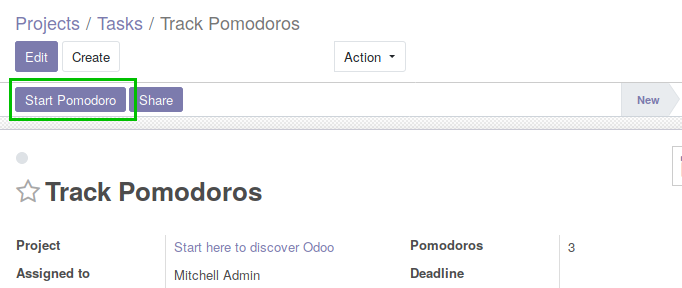
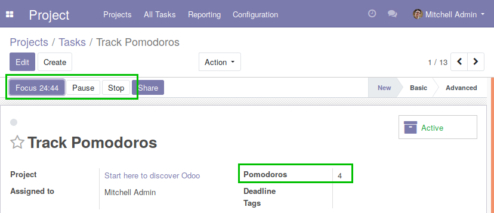

Improve productivity with Pomodoro Technique
Cycle between focus and break for better mental health and work result.
Pomodoro Technique is a working process to have small breaks between focus periods. That is to improve productivity. This module add timer to a task, track number of pomodoros.
This tool is tested with Odoo 11, 12, 13 and 14. Odoo 9 and 10 are using Python 2 so cannot be tested at this time.

Simply press Enter or click "Start Pomodoro" for beginning of new cycle.

Extra info has more details about the current cycle.